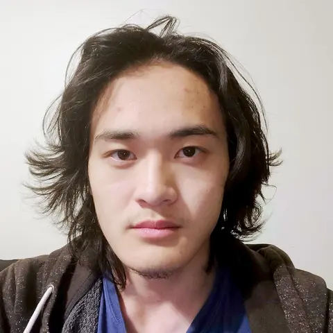
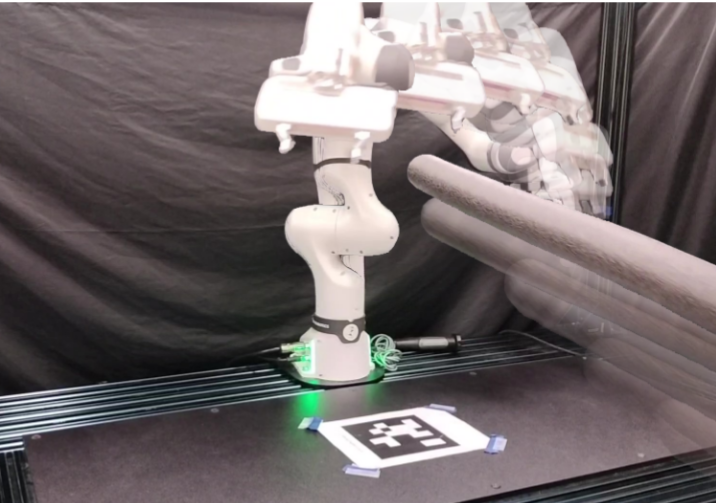
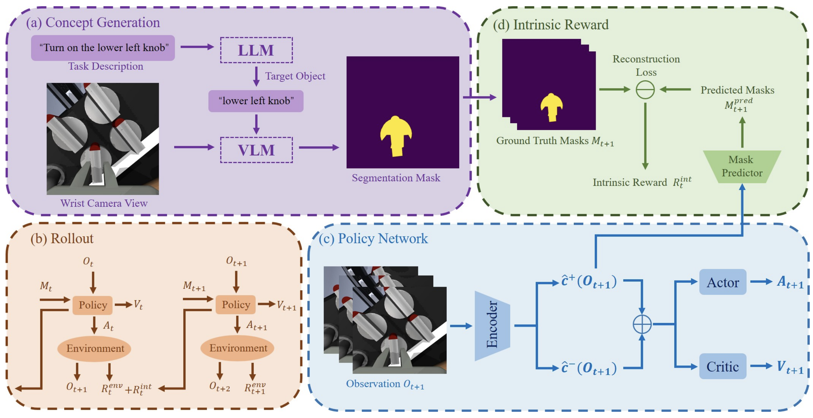
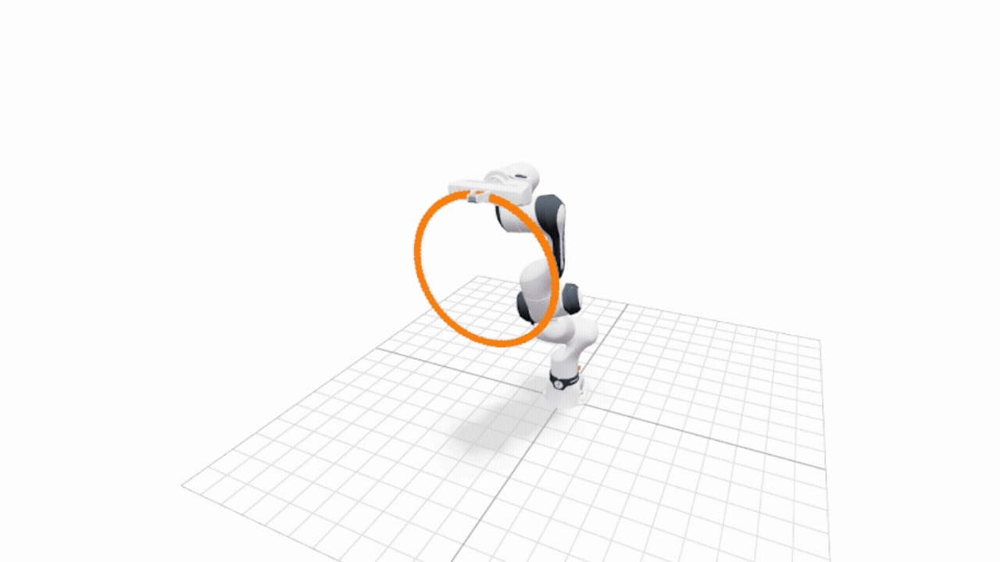

Andrew H. Liu

I'm currently an undergraduate at Purdue studying computer science and mathematics. I work as an
undergraduate researcher in Purdue CoMMA Lab under the direction of Professor Zachary Kingston.
As of now, my research interests lie in methods of real-time planning, manifold constrained planning, and trajectory optimization, including learned, probabilistic, and hardware
accelerated approaches, by which we can satisfy kinodynamic and geometric constraints while keeping
computation time at a minimum. In the tongue of our forefathers, how can we "make robot go fast"
-- Archimedes.
Broadly, I enjoy anything involving mathematical theory and anything requiring its application. This includes
rigorous tasks such as playing Elden Ring and Civilization VI. I casually do a bit of game dev. I'm working on going outside for once by getting
into climbing, but I also know ball. If you were wondering, this is the best picture I have of myself.
Academics
BS/MS Computer science honors, Purdue University (Main Campus), 4.0/4.0
BS Mathematics, Purdue University (Main Campus), 3.97/4.0
Dean's list
Experience
Undergraduate Research Assistant, Purdue CoMMA Lab
• Pursuing first author publications under Prof. Zak Kingston
• Led development of lab's real-time planning demonstration w/ Franka robotic manipulators. Engineered C++ library for pointcloud perception/localization and velocity-based control system for Franka arm.
• Implemented reactive teleoperation system with Franka arms and Valve Index for expert demonstration data collection via weighted optimization-based inverse kinematics. Extended to bimanual setup with collision avoidance.
• Collaborated with Purdue Camp Lab in sim2real policy transfer of fully pixel-based concept embedding model with VLM reward shaping. Designed wrist camera mount via Solidworks and implemented real-world perception and action system.
• Partnered with Queen's University ESP research group on analysis of real-time replanning feasibility. Implemented real world experiment of real-time ASAO planning w/ AORRTC, collected metrics on runtime, path length, etc.
Undergraduate Teaching Assistant, Purdue University
• CS 18200: Foundations of Computer Science (Spring 2026)
◦ Attending weekly TA meetings, answering questions on online forum, holding office hours, proctoring exams.
• CS 38100: Intro. to the Analysis of Algos. (Fall 2025)
◦ Holding office hours to assist in problem solving. Grading assignments and offering constructive feedback.
• CS 25200: Systems Programming (Spring 2025)
◦ Held office hours, assisted in programming labs, graded assignments, helped with exam grading and proctoring
• CS 19300: Tools (Fall 2024)
◦ Assisted freshman CS students in learning fundamental software tools and participated in info panel regarding Purdue CS
Publications

Revisiting Replanning from Scratch: Real-Time Incremental Planning with Fast Almost-Surely Asymptotically Optimal Planners
Mitchell E. C. Sabbadini, Andrew H. Liu, Joseph Ruan, Tyler S. Wilson, Zachary Kingston, and Jonathan D. Gammell
(Under review)

CDE: Concept-Driven Exploration for Reinforcement Learning
Le Mao, Andrew H. Liu, Renos Zabounidis, Zachary Kingston, and Joseph Campbell
(Under review)
Projects (Recent)
SEPTIK: Stein-Enhanced Pathwise-Inverse Kinematics

This was a fun project I worked on over break which implements a python/jax library for pathwise-inverse kinematics. Having read the STAMPEDE paper on pathwise IK by Rakita et al., as well as having
recently completed the below project, I felt like doing my own take on pathwise IK taking some inspiration from STAMPEDE as well as other prior works. The main
features of SEPTIK are automatic vectorization for runtime gains, as well as Stein-variational projection onto self-motion manifolds to promote sample diversity.
Intuitively, by obtaining diverse samples on a self-motion manifold, it is likely the case that we don't need to draw as many samples per timestep as STAMPEDE does, which leads
to faster computation of minimum error paths. Furthermore, to make these paths executable in the real-world, we enforce continuity up to acceleration by interpolating quintic polynomials
between the timesteps. Finally, by treating each timestep as a layer in a multipartite graph as in STAMPEDE, solving for the minimum cost path through this graph from the first to
last layer, we are able to compute a minimum cost path. The goal is that our paths have less error than STAMPEDE and are computed in less time.
SCP: GPU-Accelerated Stein-Variational Manifold Constrained Planning
Sample text
Real-Time Planning Demonstration
Sample text
Franka Teleoperation
Sample text
Spaceballs
Sample text
Outreach
Northfield Jr./Sr. High School
I traveled with Zak and fellow lab member Miras to Indiana's Northfield High to assist with a talk and demonstration about Purdue computer science and robotics.
I had the privilege of talking about some of my experiences in Purdue's CS program and shared some insights about studying CS, and the fun I have doing robotics research.
I also got to pilot around the Spot for a bit.
Below are some pictures from the visit.


Purdue CS Department Visit
Once again assisted Zak with another high school event about CS and robotics, this time taking place in Lawson Commons with a quick break for lunch.
Got some much needed exercise carrying the Spot to and from the event, piloted the Spot around again, and got to interact with some of the students.
Sadly, I couldn't find pictures of this one.